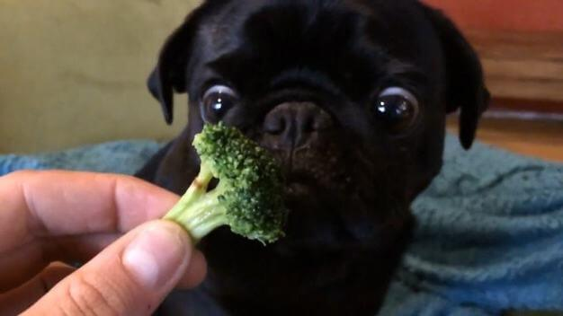

Питание
Выбор корма — ответственное мероприятие. Конечно, хорошо, когда заводчик, у которого приобретается мопс, приучил собаку к определенному виду корма, тогда вы просто продолжаете его использовать при кормлении собаки. Однако иногда возникают ситуации, при которых необходимо сменить корм, или приучить к нему свою собаку. Первым шагом должна быть консультация ветеринарного врача, который подберет корм, идеально подходящий вашему питомцу, или консультация с заводчиком, который посоветует правильный корм. Ели вы решили сами подбирать корм своему мопсу, то надо помнить, что готовые корма условно делятся на две категории — сухие и баночные «мокрые».

Сегодня рынок предлагает много вариаций на тему готового корма, и выбор просто огромен. То какой корм выберете именно вы, зависит от финансовой возможности и предпочтений мопса. Потому как один корм они едят с удовольствием, а к другому даже не притронуться, так что не лишним будет поговорить с владельцами мопсов на предмет того, какой корм используют они. Собрав и проанализировав все данные, соизмерив свои финансовые возможности, можно приступать к выбору корма.
Среди наиболее известных и популярных марок, есть лидирующие в данной отрасли компании, чья деловая репутация и продукция, заслужила доверие миллионов простых собаководов и профессиональных заводчиков. Корм — это не просто готовый для употребления продукт, это еще и здоровье собаки, залог ее долголетия.
Рекомендуемые марки производителей кормов
EUKANUBA
Основная философия компании-производителя кормов Eukanuba состоит в использовании для кормления собак белков животного происхождения, источниками которых являются яица, а также мясо курицы, баранины, рыбы, для того, чтобы рацион животных был максимально приближен к рациону их предков-хищников.
HILL’S
Это крупный производитель, научно-технологический центр которого, расположен в штате Канзас в г. Топека, где последние десятилетия работают ветеринарные специалисты, диетологи и физиологи. На сегодняшний день Hill’s является мировым лидером в производстве питания для мелких домашних животных. Продукция производителя кормов охватывает все возрастные и весовые категории собак
ROYAL CANIN
В своих рационах для собак, ROYAL CANIN учитывают такие параметры как возраст, степень активности, соотношение размера и веса, а также физиологические особенности собаки.
PEDIGREE
Pedigree выпускается как в виде сухого корма, так и в виде консервов с желе и подушечек с паштетом внутри с различными вкусовыми добавками. Кроме того, продукция подразделяются на корма для питания взрослых и пожилых особей и для питания щенков.